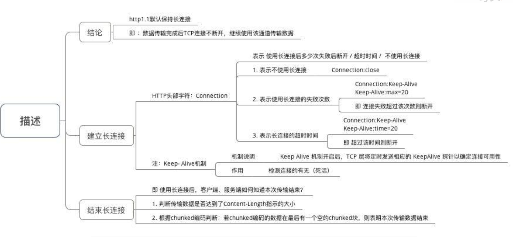

基础
- 计算机中的二进制数
- 原码：使用最高位表示符号，后面表示数据大小
- 补码：正数和原码相同，负数为去除符号位的各位取反，末尾加一得到。（类似于计算机计算中的取模）
- 反码：原码各位（除了符号位）取反
- 移码：补码，符号位取反
- 计算机网络定义： 将不同地理位置，具有独立功能的多台计算机及网络设备通过通信线路（包括传输介质和网络设备）连接起来，在网络操作系统，网络管理软件及网络通信协议的共同管理和协调下实现资源共享和信息传递的计算机系统
- 计算机网络的基本组成
- 硬件系统：计算机设备，传输介质，网络设备。
- 软件系统：操作系统，网络通信协议
互联网体系结构


五层体系结构（转载自https://www.cnblogs.com/vamei/archive/2012/11/24/2773967.html）
物理层： 是指光纤、电缆或者电磁波等真实存在的物理媒介。这些媒介可以传送物理信号，比如亮度、电压或者振幅。对于数字应用来说，我们只需要两种物理信号来分别表示0和1，比如用高电压表示1，低电压表示0，就构成了简单的物理层协议。针对某种媒介，电脑可以有相应的接口，用来接收物理信号，并解读成为0/1序列。
连接层：信息以帧(frame)为单位传输。所谓的帧，是一段有限的0/1序列。连接层协议的功能就是识别0/1序列中所包含的帧。比如说，根据一定的0/1组合识别出帧的起始和结束。在帧中，有收信地址(Source, SRC)和送信地址(Destination, DST)，还有能够探测错误的校验序列(Frame Check Sequence)。当然，帧中最重要的最重要是所要传输的数据 (payload)。 这些数据往往符合更高层协议，供网络的上层使用。与数据相配套，帧中也有数据的类型(Type)信息。连接层协议不关心数据中到底包含什么。帧就像是一个信封，把数据包裹起来。数据帧中包括，SRC, DST, 数据，纠错码。Ethernet 以太网和WiFi 是现行的常见的连接层协议。
网络层：不同的社区之间该如何通信呢？ 换句话说，如何让WiFi上的一台计算机和以太网上的另一台计算机通信呢？我们需要一个“中间人”。这个“中间人”必须有以下功能: 1. 能从物理层上在两个网络的接收和发送0/1序列，2. 能同时理解两种网络的帧格式。路由器(router)就是为此而产生的“翻译”。一个路由器有多个网卡(NIC，Network Interface Controller)，每个NIC可以接入多个网络，并理解相应的连接层协议。在帧经过路由到达另一个网络的时候，路由会读取帧的信息，并改写以发送到另一个网络。所以路由器就像是在两个社区都有分支的邮局一个社区的邮差将信送到本社区的邮局分支，而邮局会通过自己在另一个地区的分支将信转交给另一个社区的邮差手中，并由另一个社区的邮差最终送到目的地。
传输层：上面的三层协议让不同的计算机之间可以通信。但计算机中实际上有许多个进程，每个进程都可能有通信的需求(参看Linux进程基础和Linux进程间通信)。这就好像一所房子里住了好几个人(进程)，如何让信精确的送到某个人手里呢？遵照之前相同的逻辑，我们需要在信纸上写上新的信息，比如收信人的姓名，才可能让信送到。所以，传输层就是在信纸的空白上写上新的“收信人”信息。每一所房子会配备一个管理员(传输层协议)。管理员从邮差手中接过信，会根据“收信人”，将信送给房子中的某个人。 传输层协议，比如TCP和UDP，使用端口号(port number)来识别收信人(某个进程)。在写信的时候，我们写上目的地的端口。当信到达目的地的管理员手中，他会根据传输层协议，识别端口号，将信送给不同的人。TCP和UDP协议是两种不同的传输层协议。UDP协议类似于我们的信件交流过程。TCP协议则好像两个情人间的频繁通信。一个小情人要表达的感情太多，以致于连续写了好几封信。而另一方必须将这些信按顺序排列起来，才能看明白全部的意思。TCP协议还有控制网络交通等功能。
应用层：通过上面的几层协议，我们已经可以在任意两个人(进程)之间进行通信。然而每个人实际上从事的是不同的行业。有的人是律师，有的人外交官。比如说律师之间的通信，会用严格的律师术语，以免产生纠纷。再比如外交官之间的通信，必须符合一定的外交格式，以免发生外交误会。再比如间谍通过暗号来传递加密信息。应用层协议是对信件内容进一步的用语规范。应用层的协议包括用于Web浏览的HTTP协议，用于传输文件的FTP协议，用于Email的IMAP等等。
整个通信过程如下:
WiFi上的计算机1->路由WiFi接口-> 路由以太网接口-> 以太网上的计算机2
(蓝色表示WiFi网络，绿色表示以太网络)
在连接层，我们的一个帧中只能记录SRC和DST两个地址。而上面的过程需要经过四个地址 (计算机1，WiFi接口，以太网接口，计算机2)。显然，仅仅靠连接层协议无法满足我们的需要。由于连接层协议开发在先，我们无法改动连接层协议，只能在连接层的数据(payload)，也就是信纸内部下功夫了。IP协议应运而生。
计算机1，路由器和计算机2都要懂得IP协议。当计算机1写信的时候，会在信纸的开头写上这封信的出发地址和最终到达地址 (而不是在信封上)，而在信封上写上要送往邮局。WiFi网的邮差将信送往邮局。在邮局，信被打开，邮局工作人员看到最终地址，于是将信包装在一个新的信封中，写上出发地为邮局，到达地为计算机2，并交给以太网的邮差，由以太网的邮差送往计算机2。
所以邮局要求，信纸上写的地址必须是一个符合官方规定的“邮编”，也就是IP地址。这个地址为世界上的每一个房子编号(邮编)。当信件送到邮局的时候，邮局根据邮编，就能查到对应的地址描述，从而能顺利改写信封上的信息。
每个邮局一般连接多个社区，而一个社区也可以有多个邮局，分别通往不同的社区。有时候一封信要通过多个邮局转交，才能最终到达目的地，这个过程叫做route。邮局将分离的局域网络连接成了internet，并最终构成了覆盖全球的互联网。
网络协议
连接层协议：Ethernet 以太网协议和WiFi协议
- Ethernet 以太网协议
- 头部（preamble，SFD 起始信号，DST 目的地，SRC 发出地，Type 类型）
- 数据 （IP包）
- 尾部（FCS校验和（使用CRC校验））
- 集线器（Hub）：广播式传播，不允许冲突，需要添加冲突处理算法。
- 交换机（Switch）:只向特定的网络接口中传播数据。
- WiFi 协议(802.11协议)
网络层协议：
- 网卡： 网卡（Network Interface Card) 是计算机中的一个硬件，在接收到了网络信息之后，将信息交给计算机，当计算机需要发送信息的时候，也通过网卡发送。
- 路由器：就是配有多个网卡的硬件，帮助网卡接入不同的网络中。
- IP协议： 不可靠。不能保证按序到达。
- IPv4 => IPv6: 地址耗尽的危机
- Version, Source Address, Destination Address: IP 协议版本，出发地IP和目的地IP
- Time to live => Hop Limit : 表示一个IP包的最大存活时间
- Type of Service => Traffic Class: 为包分优先级， 后被分为Differentiated Service Field (DS, 前6位)和 Explicit Congestion Notification (ECN, 后2位)
- Protocol => Next Header: 包中所包含的协议是什么
- IHL 记录头部长度，Total Length => Payload Length 表示IPv6数据部分的长度。
- Header Checksum：校验IP头部信息。
- Identification, flags和fragment offset: 为包的碎片化准备，包传播路径上面有MTU(最大传输单元)
- Flow Label (IPv6 中新增)： 提醒路由器来重复之前的接力路径，这样IP包可以保持出发的顺序。
- RIP 协议(Routing Information Protocol)：通过距离来决定routing table. 通常在一个自治系统中使用。
- BGP 协议(Boarder Gateway Protocol)：不同的 AS 相互沟通的协议。
- 为了应对地址不够用的危机，使用CIDR无类域间路由进行网络扩展，相当于每个IP多了一个配套的子网掩码。
- NAT协议
- 基础NAT协议
- NATP协议
介于网络层和传输层之间的协议：ICMP 协议， 主要作用是传输网络诊断信息。
ARP协议用于发现周边的IP地址和MAC地址的对应。然而，ARP协议只用于IPv4，IPv6并不使用ARP协议。IPv6包通过邻居探索(ND, Neighbor Discovery)来实现ARP的功能。ND的工作方式与ARP类似，但它基于ICMP协议。ICMP包有Neighbor Solicitation和Neighbor Advertisement类型。这两个类型分别对应ARP协议的询问和回复信息。
传递错误信息和咨询信息。ICMP协议是基于IP协议的。是实现ping命令和traceroute命令的基础。
常见的ICMP包类型
- 回音：Echo-询问类型包，Echo-回答类型包
- 源头冷却：提醒主机减慢发包速度。
- 目的地无法到达：可能不存在合适的路由或者是相对应接口没有开启。
- 超时：TTL减为0的时候，发生的错误就是超时错误。
- 重定向: 当一个路由器收到了一个IP包，对照其routing table,发现自己不应该收到该IP包，它会向主机发送重新定向类型的ICMP, 提醒出发主机修改自己的routing table.
传输层协议
UDP协议： 和IP协议非常相似，不可靠的，以数据包形式传输。
- UDP分为头部，和数据部分两个部分。
- UDP头部包括source port，destination port，Length 以及 Checksum 四个部分。
- 可以调用操作系统中的API，来构建socket。Socket是操作系统提供的一个编程接口，它用来代表某个网络通信。
TCP协议：传输层的流协议。可靠的协议。双向的。
滑动窗口协议代替单纯的stop and wait 协议：传输(Seq),等待(Ack)
TCP需要两个IP，两个端口确定谁和谁在说话。同一个端口上可能有很多个连接。
应用层协议
- 基于TCP：FTP(文件传输协议，端口21)，Telnet(远程登录，支持BBS，端口23)， SMTP(简单邮件传输协议，端口25)，POP3(用于接受邮件的协议，端口110)，HTTP(超文本传输协议)
- 基于UDP：DNS(域名解析协议，端口53)， SNMP(简单网络管理协议，端口161)，TFTP(简单文件传输协议，端口69)
TCP/IP 协议
TCP头部

TCP 连接
每个TCP片段都有自己的序号，ACK是一位，只有ACK设定的时候，回复号才生效，许多ACK回复的时候，是附着在其双向的连接中，也可以附着在SYN和FIN片段中。
TCP三次握手
ISN 交换 (Initial Sequence Number)

青色为纯粹的ACK片段。整个过程的本质是双方互发含有自己的ISN的SYN片段。根据TCP传输的规则，接收到ISN的一方需要回复ACK，所以共计四片信息在建立连接过程中传输。之所以是三次握手 (而不是四次)，是因为server将发送SYN和回复ACK合并到一个TCP片段中。我们以client方为例。client知道自己的ISN(也就是ISN(c))。建立连接之后，它也知道了对方的ISN(s)。此后，如果需要发送文本流片段，则编号为ISN(c) + 1, ISN(c) + 2 …。如果接收文本流片段，则期待接收ISN(s) + 1, ISN(s) + 2 …。连接建立之后，连接的双方就可以按照TCP传输的方式相互发送文本流了。
TCP 四次挥手 连接终结

一个连接建立之后，连接两端的进程可以利用该连接进行通信。当连接的一方觉得“我讲完了”，它可以终结连接中发送到对方方向的通信。连接最终通过四次握手(four-way handshaking)的方式终结，连接终结使用的是特殊片段FIN(FIN位为1的片段)。
我们可以看到，连接终结的过程中，连接双方也交换了四片信息(两个FIN和两个ACK)。在终结连接的过程中，TCP并没有合并FIN与ACK片段。原因是TCP连接允许单向关闭(half-close)。也就是说，TCP连接关闭了一个方向的传输，成为一个单向连接(half-duplex)。第二个箭头和第三个箭头传递必须分开，才能有空隙在开放的方向上继续传输。如果第二个箭头和第三个箭头合并在一起，那么，随着一方关闭，另一方也要被迫关闭。
第二和第三次握手之间，server可以继续单向的发送片段给client，但client不能发送数据片段给server。(上面的终结从client先发起，TCP连接终结也可以从server先发起。)在Client发送出最后的ACK回复，但该ACK可能丢失。Server如果没有收到ACK，将不断重复发送FIN片段。所以Client不能立即关闭，它必须确认Server接收到了该ACK。Client会在发送出ACK之后进入到TIME_WAIT状态。Client会设置一个计时器，等待2MSL的时间。如果在该时间内再次收到FIN，那么Client会重发ACK并再次等待2MSL。所谓的2MSL是两倍的MSL(Maximum Segment Lifetime)。MSL指一个片段在网络中最大的存活时间，2MSL就是一个发送和一个回复所需的最大时间。如果直到2MSL，Client都没有再次收到FIN，那么Client推断ACK已经被成功接收，则结束TCP连接。

实现无差错的传输方案
滑动窗口概念：自动重传请求协议（ARQ）为了方便存在自动重传协议（ARQ）

TCP 流量控制(flow control)：接收方将advertised window size 通知发送方。发送方在收到window size的通知时，会调整自己的滑窗大小，使得发送速率降低，这样来减轻接收方的负担。出现零窗口的时候，发送方会不断探测接收方的窗口，窗口探测的时候，发送方会发送1byte大小的TCP片段，并且等待ACK回复(里面包含Win Size)
白痴窗口综合症 (Silly Window Syndrome) : 通信双方传输包含通信数据量很少，TCP头部的控制信息很多的情况。为了解决这个问题，需要从两方面入手。TCP中有相关的规定，要求：
接收方宣告的窗口必须达到一定的尺寸，否则等待。
除了一些特殊情况，发送方发送的片段必须达到一定的尺寸，否则等待。特殊情况主要是指需要最小化延迟的TCP应用(比如命令行互动)。
TCP重新发送机制
- TCP超时重传机制：重新发送超时时间(RTO, retransmission timeout），TCP协议中，通过采样RTT来得到合适的RTO时间
- TCP快速重传机制：收到三次duplicate Ack的时候，发出方认为接收方没有收到，就进行重新传送之前没有传送的片段。
TCP拥塞控制机制: 防止过多的数据注入到网络中，使得网络中的路由器和链路过载。
TCP通过维护 Congestion Window Size 来进行拥塞控制。真实的滑窗大小取这两个的最小值，来满足拥塞控制和流量控制的要求。
TCP拥塞控制有这样四个算法
- slow start, congestion avoidance
快重传和快恢复算法
TCP的拥塞控制处于这样两个不同的状态，slow start 和 拥塞避免 congestion avoidance

Congestion window从slow start的状态开始。Slow start的特点是初始速率低，但速率不断倍增。每次进入到slow start状态时，cwnd都需要重置为初始值1。发送方每接收到一个正确的ACK，就会将congestion window增加1，从而实现速率的倍增(由于累计ACK，速率增长可能会小于倍增)。
当congestion window的大小达到某个阈值ssthresh时，congestion进入到congestion avoidance状态。发送速率会继续增长。发送方在每个窗户所有片段成功传输后，将窗口尺寸增加1(实际上就是每个RTT增加1)。所以在congestion avoidance下，cwnd线性增长，增长速率慢。
如果在congestion avoidance下有片段丢失，重新回到slow start状态，并将ssthresh更新为cwnd的一半。我们看到，sshthresh是slow start到congestion avoidance的切换点。而片段丢失是congestion avoidance到slow start的切换点。一开始sshthresh的值一般比较大，所以slow start可能在切换成congestion avoidance之前就丢失片段。这种情况下，slow start会重新开始，而ssthresh更新为cwnd的一半。
总的来说，发送速率总是在增长。如果片段丢失，则重置速率为1，并快速增长。增长到一定程度，则进入到慢性增长。快速增长和慢性增长的切换点(sshthred)会随着网络状况(何时出现片段丢失)更新。通过上面的机制，让发送速率处于动态平衡，不断的尝试更大值。初始时增长块，而接近饱和时增长慢。但一旦尝试过度，则迅速重置，以免造成网络负担。
拥塞控制存在不同的算法，来进行协调和调整。

TCP粘包问题和nagle算法：发送端为了将数据更有效的发送到接收端，使用了优化算法nagle算法，将多次间隔较小的包且数据量较小的包合并成一个包，进行封包，这样的话，要求接收端采用合适的算法进行拆包。
DNS 协议
- DNS协议是基于UDP的，DNS服务器中存储了域名和IP的关系。
- DNS协议进行查找的时候，是按照域名中的顺序，一级一级的进行查找。
- DNS Cache 缓存，在进行查找之前，计算机会先查询cache中是否有相关的记录。
- 反向DNS，和DNS的顺序相反，提供IP所对应的域名。
HTTP协议
HTTP 报文
- 基本格式：起始行（start line），头信息(headers) 空行 主体信息
- 起始行只有一行，请求表示求什么，回复表示发生什么。
- 头信息是多行，每一行都是键值对。
- 主体部分表示包含的具体资源。
HTTP 状态码
- 2xx 成功： 200 成功
- 3xx 重定向： 301 永久移动 302 临时移动
- 4xx 请求错误：404 未找到
- 5xx 服务器错误： 500 服务器内部错误
HTTP 1.0 和 1.1 的区别
- 引入了持久连接，在同一个TCP连接中可以传输多个
HTTP请求和响应 - 多个请求和响应可以同时进行&可以重叠
- 引入了更多的请求头和响应头
- 引入了持久连接，在同一个TCP连接中可以传输多个
HTTP 请求方法
- OPTIONS，HEAD， GET（请求的参数需要放置在URL中），POST（向指定资源提交数据进行处理请求），PUT(向指定资源位置上传新内容)，DELETE(请求服务器删除指定资源)，TRACE(回显收到的请求)，
- GET请求和POST请求区别：URL上面回显，数据安全性，幂等性。
HTTP 请求过程
- 客户端连接到Web服务器：浏览器与Web服务器建立TCP连接
- 发送HTTP请求
- 服务器接受请求并返回HTTP响应
- 释放TCP连接：connection模式为close, 服务器主动关闭TCP连接； connection 模式为keepalive，则连接会维持一会儿
HTTP 长连接和短连接
在HTTP/1.0中默认使用短连接。也就是说，客户端和服务器每进行一次HTTP操作，就建立一次连接，任务结束就中断连接。当客户端浏览器访问的某个HTML或其他类型的Web页中包含有其他的Web资源（如JavaScript文件、图像文件、CSS文件等），每遇到这样一个Web资源，浏览器就会重新建立一个HTTP会话。
而从HTTP/1.1起，默认使用长连接，用以保持连接特性。使用长连接的HTTP协议，会在响应头加入这行代码：
1
Connection:keep-alive
在使用长连接的情况下，当一个网页打开完成后，客户端和服务器之间用于传输HTTP数据的TCP连接不会关闭，客户端再次访问这个服务器时，会继续使用这一条已经建立的连接。Keep-Alive不会永久保持连接，它有一个保持时间，可以在不同的服务器软件（如Apache）中设定这个时间。实现长连接需要客户端和服务端都支持长连接。

转发和重定向的区别：转发是服务器的行为，重定向是客户端的行为
Cookie & Session & Token
- Cookie: 一种客户端机制

- 为了辨别用户身份，进行session追踪而储存在本地客户端上面的数据（通常加密）
- 分为内存cookie (浏览器关闭后就消失了)，硬盘cookie（存在过期时间，超时或者用户手动清理）
- Cookie: 一种客户端机制
- 持久性Cookie和非持久性Cookie
- Session: 代表服务器和客户端一次会话过程，过程可以是连续的，可以是断续的。Session由服务器端生成并进行保存。
- 判断用户是否登录 & 购物车功能
- Token:

- Token 由服务器返回给客户端，之后客户端每次请求都必须带上Token, 服务器端进行验证Token的有效性。
DHCP协议 (动态主机配置协议)
- 要求： 地址合法和地址空闲
- 过程：Discovery(客户机广播)，Offer(DHCP服务器发出邀请，提供一个可用的IP地址)，Request(客户机正式请求使用该地址)，Acknowledge(DHCP服务器确认，并提供更多的参数)
- 其他网络配置信息，DNS服务器地址，网络出口地址
- DHCP攻击： 拒绝攻击（DHCP耗尽攻击），伪造恶意的DHCP服务（中间人攻击，借助ARP欺诈），
SSL/TLS 协议
对称加密和非对称加密：使用相同的密匙或者使用不同的密匙。公私钥加密。
SSL协议: 使用非对称加密加密对称加密的密匙，使用对称加密的密匙加密传输的数据。
SSL协议的关键是用一个非常安全的方式来交换一个对称密钥。交换的过程会比上面的描述更加复杂一些。
- 客户发起请求时，除了说明自己支持的非对称加密算法，还会附加一个客户端随机数(client random)。
- 服务器回复请求时，会确定非对称加密算法和哈希函数，并附上公钥。此外，服务器端还会在此次通信中附加一个服务器端随机数(server random)。
- 客户端会产生第三个随机数(Premaster secret)，然后利用服务器确定的非对称加密算法和公钥来加密这个随机数，再发送给服务器端。
- 客户端用自己的私钥解密第三个随机数。
这样，客户端和服务器端都知道了三个随机数。双方各自用商量好的哈希函数从三个随机数获得对称加密的密钥。
HTTP 和 HTTPS 区别：
- HTTPS协议是由SSL+HTTP两个方面构建的可进行加密传输，身份认证的网络协议。相对于HTTP协议，HTTPS协议更加的安全。
- HTTPS协议需要申请证书，一般的CA证书都需要收费。
- HTTPS和HTTP使用不同的端口，HTTP使用80端口，HTTPS使用443端口。
- HTTP工作在应用层，而HTTPS工作在传输层。
https 通信过程
- A 与B 通过TCP 建立链接，初始化SSL 层。
- 进行SSL 握手，A 发送https 请求，传送客户端SSL 协议版本号、支持的加密算法、随机数等。
- 服务器B 把CA 证书（包含B 的公钥），把自己支持的加密算法、随机数等回传给A。
- A 接收到CA 证书，验证证书有效性。
- 校验通过，客户端随机产生一个字符串作为与B通信的对称密钥，通过CA证书解出服务器B的公钥，对其加密，发送给服务器。
- B 用私钥解开信息，得到随机的字符串（对称密钥），利用这个密钥作为之后的通信密钥。
- 客户端向服务器发出信息，指明后面的数据使用该对称密钥进行加密，同时通知服务器SSL 握手结束。
- 服务器接收到信息，使用对称密钥通信，通知握手接收。
- SSL 握手结束，使用对称密钥加密数据。
SSL工作原理：握手协议，警报协议，记录协议。
网络安全
SYN flood 攻击：给服务器发送了一个SYN之后就下线了，服务器需要等待63s之后才会断开连接，这样就会把主机的SYN连接给耗尽。使用三个参数进行处理，tcp_synack_retries 可以减少重试次数, tcp_max_syn_backlog, 可以增加SYN的连接数，tcp_abort_on_overflow处理不过来直接选择放弃。
- 服务器的TCP资源分配时刻 = 完成第二次握手时，客户段进行TCP资源分配时刻在完成第三次握手时
- 攻击端利用伪造的IP地址向被攻击端进行攻击请求，而得到的报文不能发送到源地址，这样来耗尽服务器的资源，从而达到了攻击的目的。
DDos 攻击：攻击者通过路由器发送海量的信息请求和畸形报文，导致CPU无法实时处理消息，引发正常的业务交互流程，内部处理流程阻塞，达到拒绝服务的目的。
DNS 欺诈：攻击者冒充域名服务器的一种行为。主要类别有主机host文件修改，本机DNS劫持。
ARP 投毒：通过分别伪装成客户机和服务器IP，将自己的MAC地址绑定在IP上，ARP错误的将IP解析为中间人MAC地址，从而来欺骗服务器网关和客户机，使信息必须通过客户机。
Replay 攻击：攻击者发送目标主机已接受的包，来达到欺骗系统的目的，主要用于身份认证的过程中，破坏认证的正确性。防范：加时间戳或者随机数。
Web Security
SQL注入
- 通过把SQL语句插入到Web表单提交或者是域名或页面请求的查询字符串，最终达到欺骗服务器执行恶意的SQL语句的作用。
- 防范：加密处理输入，确保数据库安全（给予用户最低权限），输入验证（对于输入进行验证），参数分离，对于输入进行正则匹配验证。
CSRF跨站请求伪造
- 钓鱼网站盗用了被害者的身份信息，强调的是盗用
- 常见防护方法： 验证HTTP reference 字段；添加随机生成的Token字段；使用验证码；尽量使用POST进行请求，不使用GET进行请求；HTTP头添加自定义属性。
XSS 跨站脚本攻击： https://thief.one/2017/05/31/1/
页面被插入了恶意脚本
类别：反射型XSS，存储型XSS(存储在云端服务器)，DOM型
危害: cookie劫持，后台进行增删查改等操作，钓鱼，XSS蠕虫，修改网页代码，利用网站进行重定向，获取用户信息。
XSS探针:
'';!--"<XSS>=&{()}防御：
- 可在cookie中设置httponly（浏览器禁止页面的js访问带有httponly属性的cookie）
- xss filter（检查输入，设置白名单方式）
- 输出检查（编码，转义，常用编码：html编码，js编码，16进制等)
- 针对不同位置的输出，使用不同的处理方式
- 处理富文本
- header中使用content-Sencurity-Policy字段，规定请求js的域名白名单（CSP策略）
其他
- 浏览器中输入URL发生了什么
- 查找域名对应的IP地址。这一步会依次查找浏览器缓存，系统缓存，路由器缓存，ISPNDS缓存，根域名服务器
- 浏览器向IP对应的web服务器发送一个HTTP请求
- 服务器响应请求，发回网页内容
- 浏览器解析网页内容
- 网络命令
- ifconfig: 显示网络接口信息，如接口名称，接口类型，接口的IP地址，硬件的MAC地址等等。
- arp -a: 显示本地存储的IP-MAC对应关系
- sudo arp-scan -l：查询整个局域网内的所有IP地址的对应MAC地址
- sudo tcpdump -i en0 arp：监听en0接口的arp协议通信
- ping：是向某个IP地址发送ICMP协议的ECHO_REQUEST请求。收到该请求的设备，将返回ICMP回复。如果ping到某个IP地址，那么说明该IP地址的设备可以经网络层顺利到达
- sudo ipconfig set en0 DHCP：更新DHCP租约。设备将释放IP地址，再从DHCP服务器重新获得IP地址。
- netstat -nr: 显示路由表
- traceroute 74.125.128.99：追踪到达IP目的地的全程路由
- tcpdump是一款网络抓包工具。它可以监听网络接口不同层的通信，并过滤出特定的内容，比如特定协议、特定端口等
- 域名解析，调用DNS解析查看对应IP地址：host www.sina.com.cn
- CDN （Content Delivery Network）内容分发网络
- 定义：CDN，英文Content Delivery Network，中文翻译是内容分发网络，目的就是通过现有的Internet 中增加一新的网络架构，将网站内容发布到离用户最近的网络“边缘”，提高用户访问网站的速度，所以更像是增加了一层CACHE（缓存）层。
- 功能：当用户访问加入CDN 服务的网站时，域名解析请求将最终交给全局负载均衡DNS 进行处理。全局负载均衡DNS 通过一组预先定义好的策略，将当时最接近用户的节点地址提供给用户，使用户能够得到快速的服务。
- 组成：每个CDN 节点由两部分组成：负载均衡设备和高速缓存。